I ❤ 许修婷
开始倾听一个暗恋者的故事
(电脑端请按 "↓"键)
(手机端请下滑【没适配好】)
过去的我一直一个人生活，
享受着孤独，也憧憬着爱情。
一个人的长廊
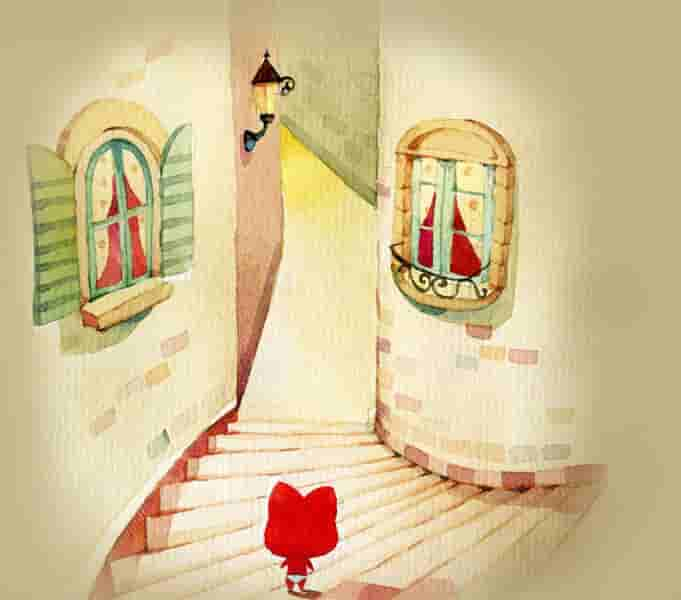一个人的山岗
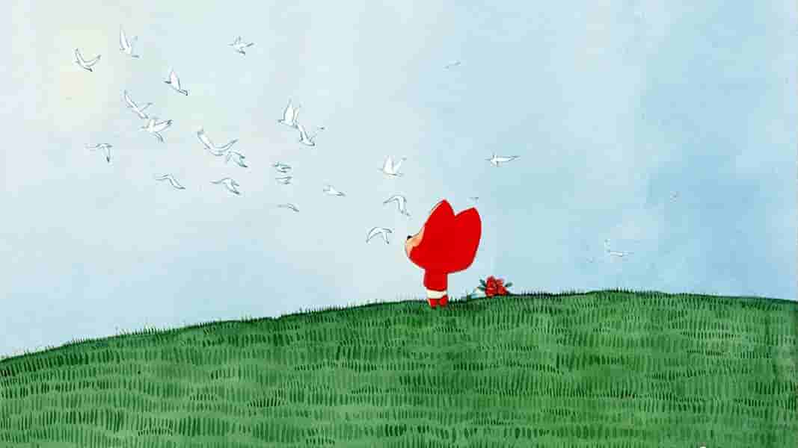一个人的出行
一个人的游戏
享受孤独，拥抱自由
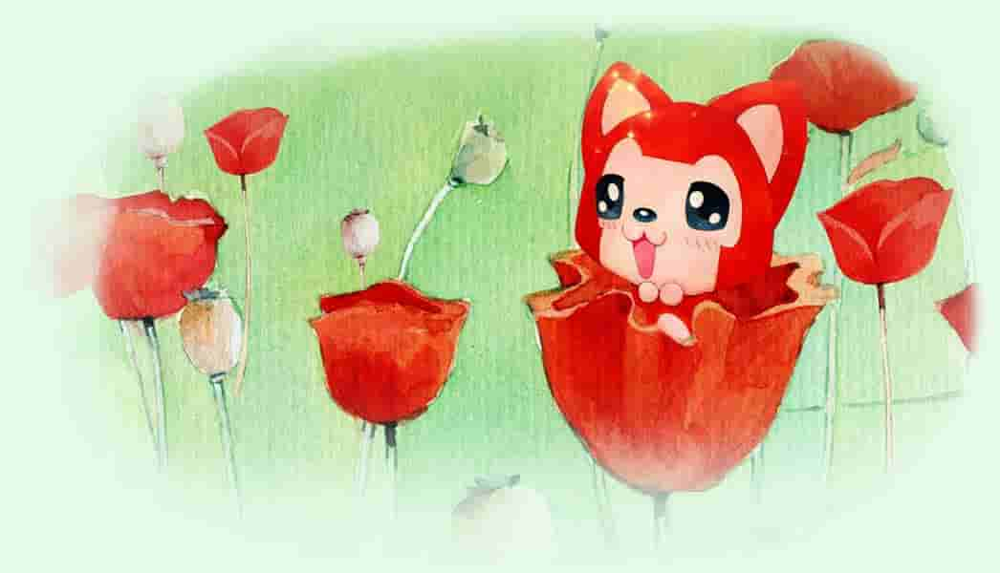生活中的风风雨雨
坦然面对
累了,找个理由笑一笑
自由够了
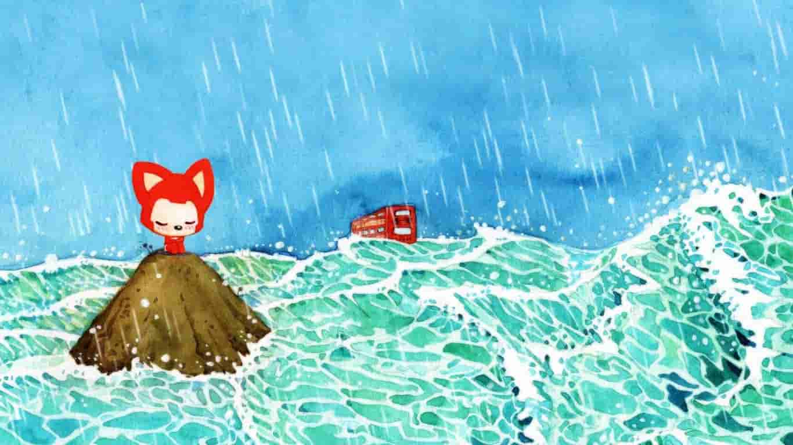开始憧憬结伴的人生
命中注定的你，又是谁？
我开始思考
我在大自然中呐喊着爱情
它并没有回应
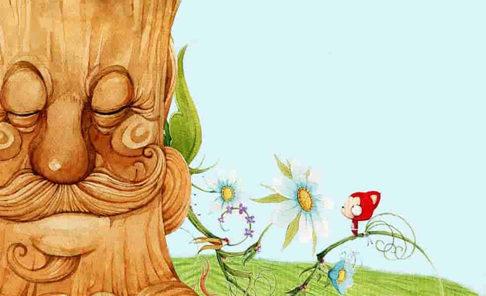
我有点退缩
迷茫于未来

直到有一天与你相遇
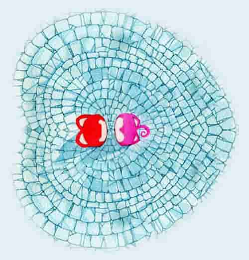我们聊着彼此的过往
我却不敢与你对视
我假装看着周围
余光却停留你身上
相处久了
心动就开始了
我不敢吐露我的心声
我怕我们之间的友谊
变得尴尬和陌生
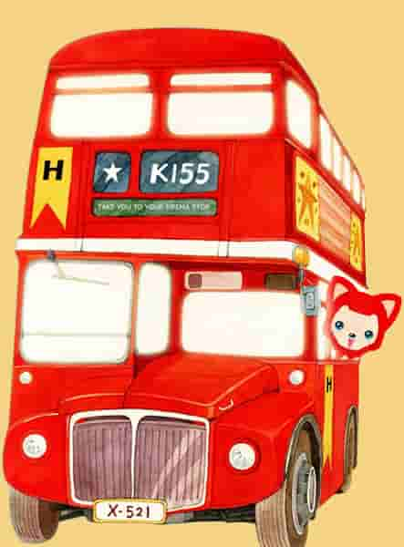
我更怕我的心意被你轻易拒绝
此刻能聊聊天就挺好的
离别是悄悄的笙箫
沉默是那天的康桥
很多时候我在想，要是恋爱...
我们能一起旅游
一起去看大山里没有的海景
一起成为吃货
一起谈笑风生
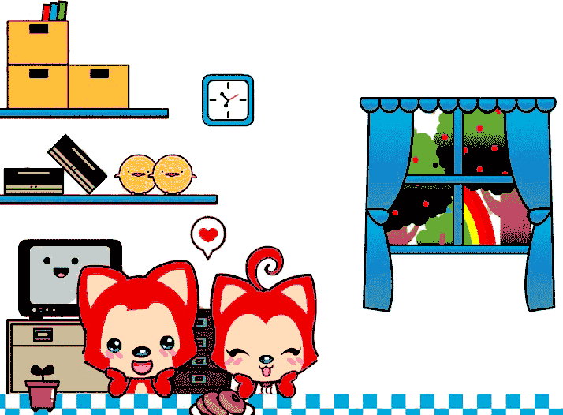一起提升自我
一起品味生活
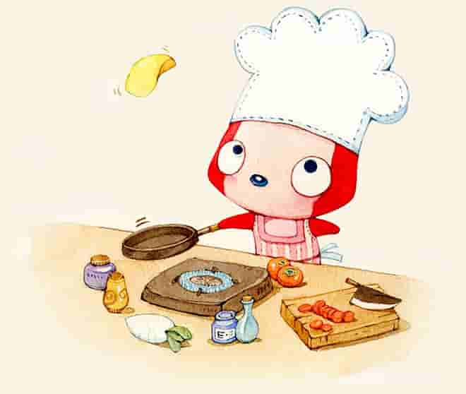享受相处的时光
朝夕相伴
总觉得
有你的生活就该如此
然而这只是我的幻想
大梦一场终须醒，患得患失
重新认识，为时不晚
毕竟，没有你
旅途上的风景没有意义
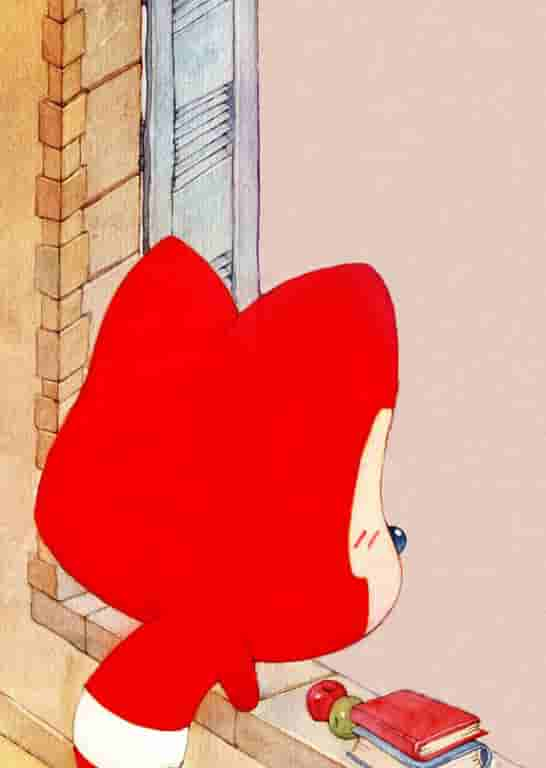
然而毕业后疫情加工作
让我焦头烂额,自顾不暇

随着时间的流逝
内心的声音告诉我
"不要错过你"
我开始认识你的交际圈
尝试进入你的生活
去了解你的过往
然，社恐如我
如何再见？一筹莫展
也许，制造偶遇
是个不错的选择
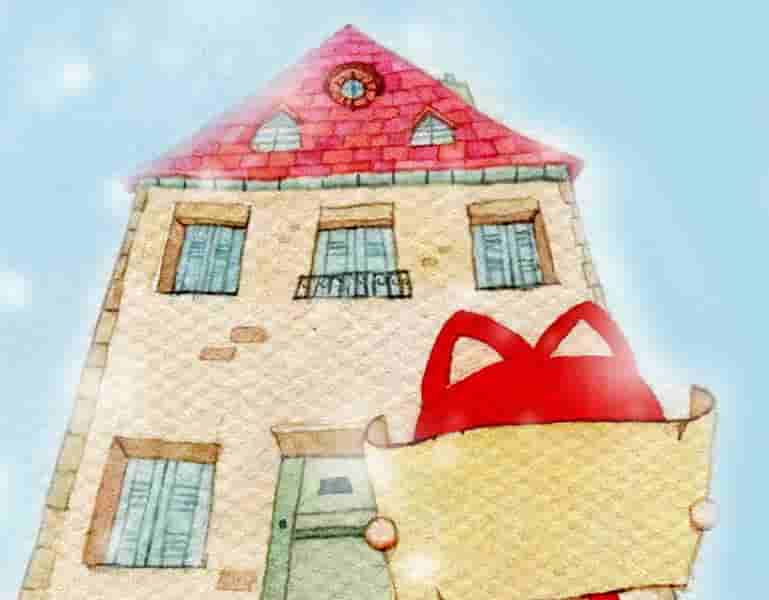
于是我打探你的消息 工作地点 出现时间 希望见面时
你会说 好巧 我说 不巧 我在等你
阅读至此，是否可笑
哈！哈！哈！
春风十里
不如你

你若安好
便是晴天
如果三年后你注定是我女朋友
你应该提早行使你的权利
此刻你不知道，我正在喜欢你
我们的故事
由你决定是否开篇
故事还没开始，
无论结局精彩亦或平淡，
值得可待。
可待，
不应该是可待追忆，
而是请你再等等我。
-- 按“Esc"键有惊喜